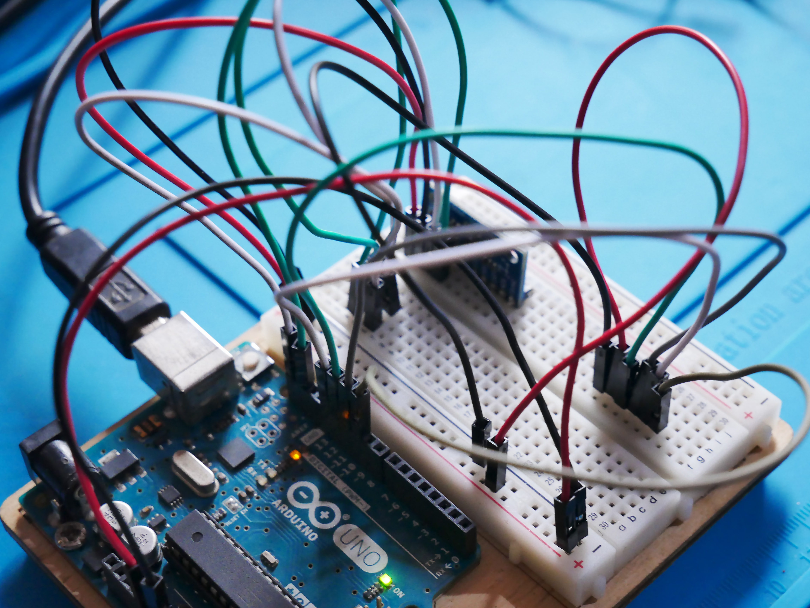
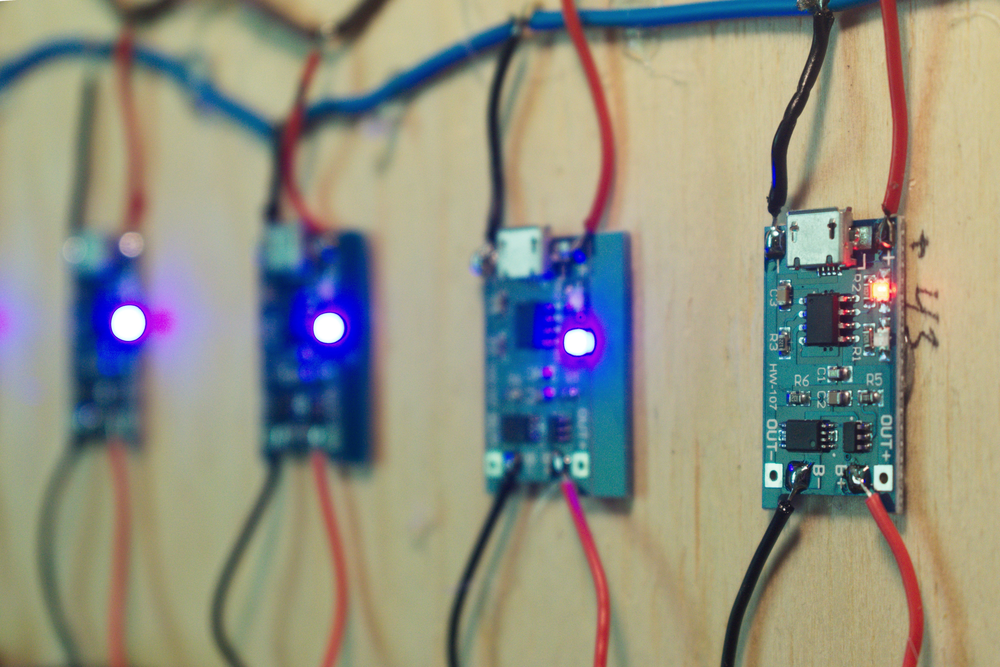
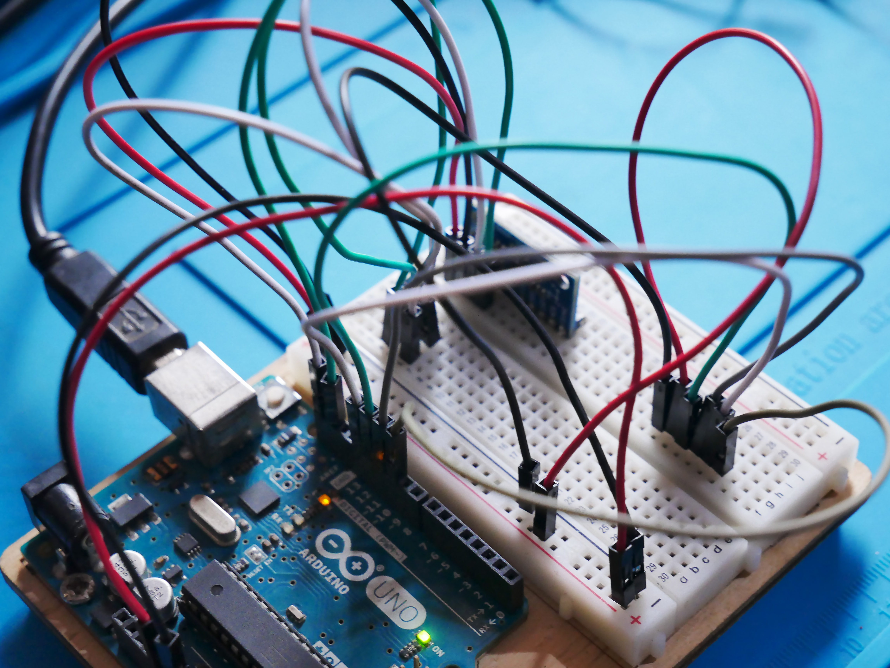
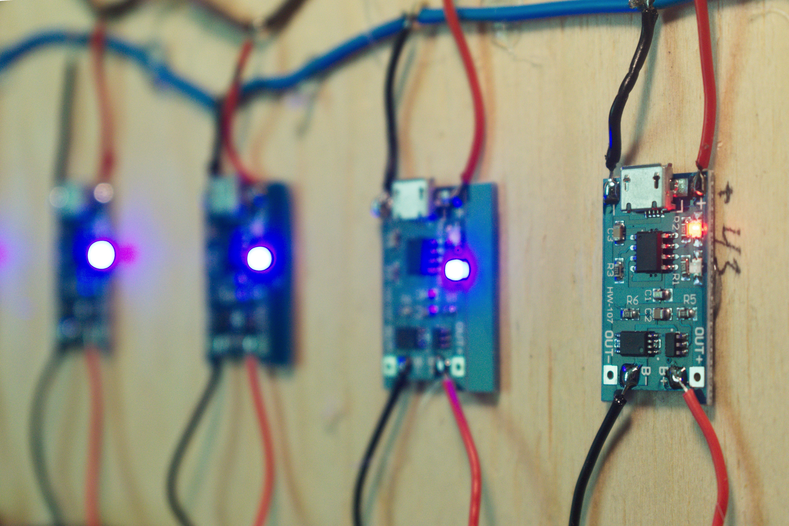

(ISO 9001-2015 Certified Company)
Nanotronics have a vision to fulfill the customer requirements in EMS, Embedded Designs services
and Value-added Services to support our clients in the Lead of Vertical Domains. And as a development division,
deliver technology driven business solutions that meets the deliberate requirements of the client.
NANOTRONICS SCIENTIFIC SOLUTIONS SMT Facility is located in the coimbatore which is just 15 kms from the International Airport of coimbatore. Starting with Manual soldering a Small Capacity in 2010, today Nanotronics is one of the Leading R&D and EMS Company with a Capacity large production in coimbatore. With Reflow oven and Highly Advanced THT Lines we are equipped to take care of our customer's complete Assembly Requirements from Prototype to Production. Our company installed full-fledged R&D labs with highly versatile tools for design and development of Embedded based applications. We offer design & Development services related to Embedded Systems.
 





Nanotronics provides on demand embedded software and hardware development, migration and integration services for embedded hardware, testing and quality assurance services. With strong technical and domain knowledge, we are obsessed with quality and settle for no less than perfection in the projects & products. Nanotronics offers advanced and technology savvy business solutions that save time and bring great reliability. Be it in application development or end-end user support, we manage complete lifecycle of the process and the right choice of the businesses looking at an offshore development team for their Electronic needs.